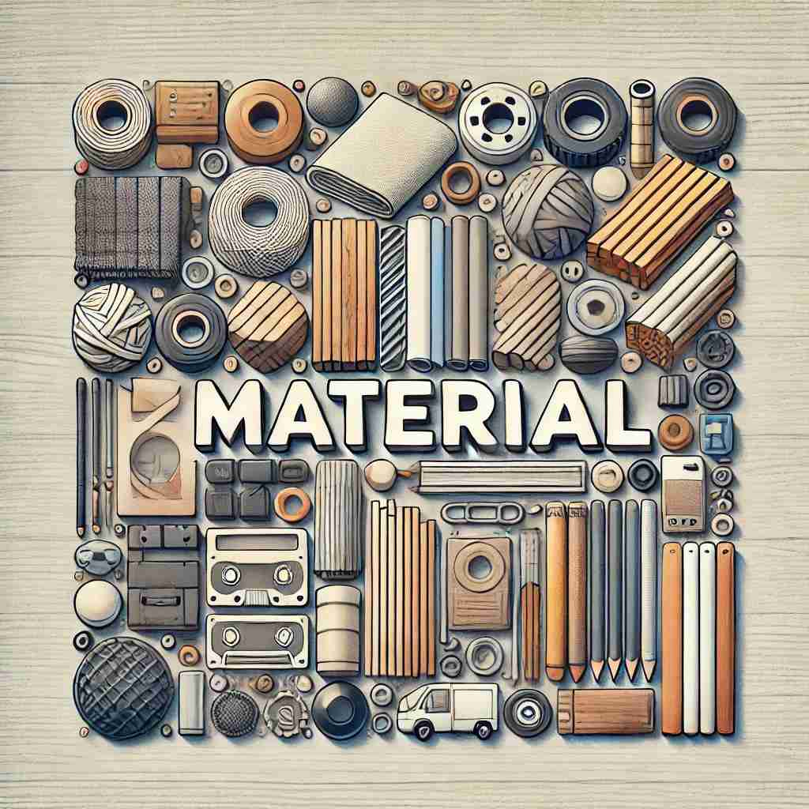

🗝️ n. the physical substance from which something is made
🖼️ 在一个忙碌的工厂里，工人们正在用大卷的钢材制造汽车。机器轰鸣，火花四溅，这些钢材就是制造汽车的基础材料。
🔍 想象'material'是构建事物的基本"原料"。无论是实物的原料、创作的素材，还是重要的、物质的概念，都可以联想到这个核心意义。这个基本概念贯穿了'material'的各种用法，有助于更好地理解和记忆它的多重含义。

💬 The craftsman uses wooden material to create a beautiful chair.

💬 The workers use different types of fabric material to make clothes.
💬 The artist uses various art materials to create beautiful paintings.

💬 The artist uses different types of material to create her sculpture.
💡 记忆 "material" 时，可以联想 "matter"（物质）和 "-ial" 的结合，强调它是构成物体的基本要素。通过与 "母体" 的概念联系，帮助理解其作为物质或材料的意义。
🗝️ n. information or ideas for use in creating a book or other work
🖼️ 在一个阳光充足的书房里，作家正坐在堆满笔记和参考书的书桌前。他从这些材料中汲取灵感，准备创作一本新小说。
💬 The journalist gathered material for his article.
❓ 信息或想法被视为创作的"原料"
🗝️ n. things needed for a particular activity
🖼️ 在一个明亮的教室中，老师将一盒颜料和画纸分发给学生。这些材料是今天美术课上必需的用品，用于绘画创作。
💬 The teacher prepared all the material for the science experiment.
❓ 活动所需的物品被视为"原料"
🗝️ adj. related to physical objects rather than the mind or spirit
🖼️ 在一个设计公司，一组设计师正在讨论新推出的家具款式。他们专注于材料的质地和色彩，强调它们的物质属性，而非抽象概念。
💬 He was more concerned with material possessions than spiritual growth.
❓ 强调物质性而非精神性
🗝️ adj. important or significant
🖼️ 在一次公司会议上，经理正在强调一个新项目的重要性。他告诉团队成员，这个项目对公司的未来发展具有重大意义，必须齐心协力。
💬 Her testimony was material to the outcome of the trial.
❓ 如同重要的"原料"一样具有实质性意义
🗝️ adj. concerned with physical needs and desires
🖼️ 在一个高档商场里，一位顾客正被琳琅满目的商品吸引。他为如何平衡物质欲望与内心需求而思索。
💬 He led a very material lifestyle, always buying the latest gadgets.
❓ 关注物质需求，类比于关注"原料"